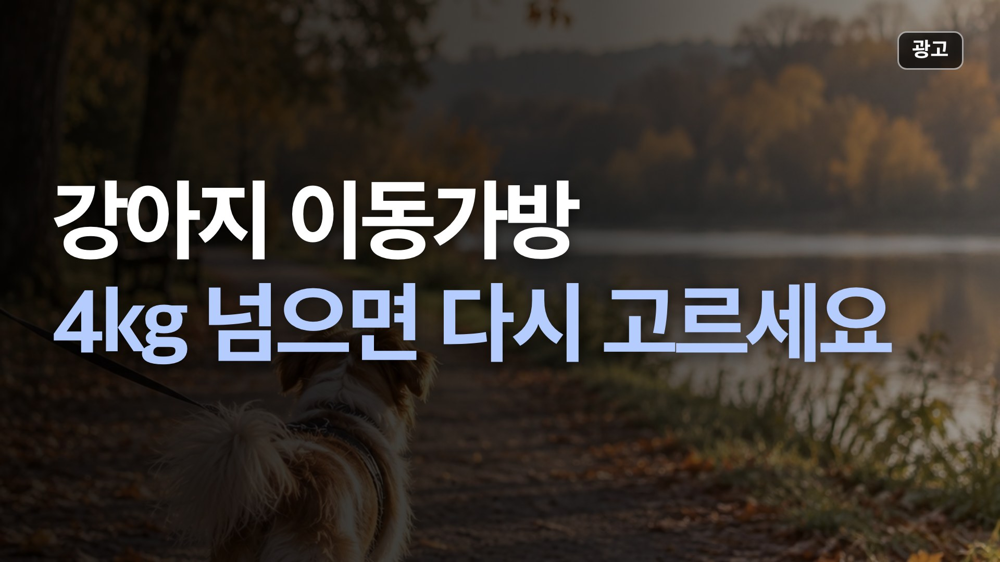
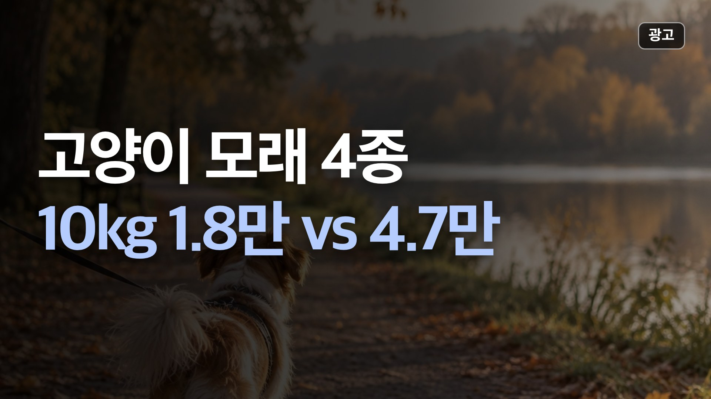
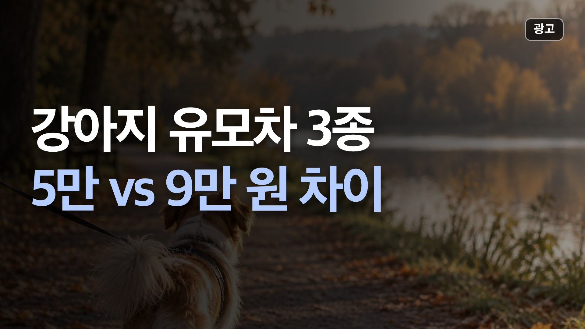
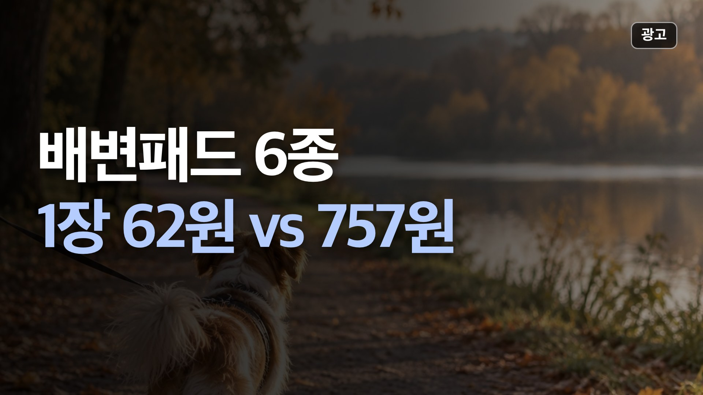

이 페이지는 네이버 쇼핑 커넥트 활동의 일환으로, 판매 발생 시 수수료를 제공받습니다.
이 페이지는 쿠팡 파트너스 활동의 일환으로, 이에 따른 일정액의 수수료를 제공받습니다.
이 포스팅은 토스쇼핑 쉐어링크 활동의 일환으로, 이에 따른 일정액의 수수료를 제공받습니다.
영상에서 본 상품, 바로 가격 보기
쇼츠·영상에 나온 상품을 최근 영상부터 모았어요. 버튼을 누르면 쿠팡이나 토스 앱으로 바로 이어져요. 가격은 확인 날짜 기준이라 들어가서 한 번 더 확인해 주세요.
🛍️ 영상 속 네이버 인기템

모찌네 고양이모래 벤토나이트 무향, 8L, 3개
18,900원 · 10/29 확인
네이버에서 가격 보기 →
마도로스펫 북어트릿 120g(대용량) 동결건조 강아지간식
18,000원 · 10/29 확인
네이버에서 가격 보기 →
페피릴리프 강아지 물티슈 5팩 대나무원단 바디티슈
37,900원 · 10/29 확인
네이버에서 가격 보기 →📺 최근 영상
🎬 쇼츠 「길냥이 집 놔 줬는데 냄새만 맡고 가는 거 우리 동네만 그럼?」 속 상품
고양이 숨숨집, 안 들어가는 이유는 크기와 냄새
실내 숨숨집 하나만 고르면 딩동펫 공룡알 하우스(소형 15,900원). 상품평 9,286개, 위아래 지퍼로 분리해 세탁할 수 있어요. 별점 1~3점 20개 중 10개는 비닐 포장 불만이었어요.
📅 가격은 10월 24일 확인값이에요.
비교 전체 보기🎬 쇼츠 「캣휠 들이고 2시간 만에 아랫집 올라온 거 실화임?」 속 상품
캣휠 '무소음'인데 낮은 별점 절반이 소음
아파트에서 밤에도 탈 집이면 런캣 XL(125,910원)은 조심하세요. '저소음' 제품인데 별점 1~3점 20개 중 11개가 소음이었고, 아랫집 항의·신고 얘기가 3개 있었어요.
📅 가격은 10월 25일 확인값이에요.
비교 전체 보기🎬 쇼츠 「물티슈만 꺼내면 도망가는 강아지, 이유가 있었어요」 속 상품
강아지 물티슈, 꺼내면 도망간다는 후기의 이유
향에 예민한 아이면 펫케어 반려동물 안심 물티슈(60매 6개 12,930원)는 피하세요. 별점 1~3점 20개 중 13개가 향이 너무 강하다였고, 그중 4개는 강아지·고양이가 냄새를 피하거나 닦은 발을 핥았다는 내용이었어요.
📅 가격은 10월 26일 확인값이에요.
비교 전체 보기
강아지 이동가방, 4kg 넘으면 고르는 게 달라요
4~5kg 강아지를 등에 메고 오래 걷거나 대중교통을 탈 거면 스페이스캣 3면 통풍 백팩(33,820원)이에요. 상세 권장이 강아지 5kg이고, 상품평 1,878개 중 별점 1~3점이 4%로 다섯 중 가장 적었어요.
📅 가격은 10월 26일 확인값이에요.
비교 전체 보기
정직한모래 가필드모래 비교
한 달에 쓰는 양이 많은 다묘 집이면 에버크린 ES(벤토나이트, 100g당 189원)나 정직한모래RG 카사바(100g당 180원)입니다. 10kg에 1.8만~1.9만 원대입니다.
📅 가격은 10월 19일 확인값이에요.
비교 전체 보기
강아지 유모차 추천 비교
가격이 먼저면 탐사 베이직 원터치 폴딩(5.1kg, 최대 15kg, 상품평 2,640개).
📅 가격은 10월 17일 확인값이에요.
비교 전체 보기
강아지 배변패드 추천 비교
가장 싸게 많이 쓰려면 탐사 실속형(50×40cm, 1장 62원, 상품평 17만 개).
📅 가격은 10월 17일 확인값이에요.
비교 전체 보기
강아지 매트 추천 비교
넓게 깔고 비용을 아끼려면 퍼즐 매트(코멧 펫, 확인한 옵션 기준 1㎡당 약 6천 원, 두께 1.2cm).
📅 가격은 10월 17일 확인값이에요.
비교 전체 보기
강아지 드라이기 비교
먼저 볼 건 털 양과 '양손이 비느냐'입니다.
📅 가격은 10월 16일 확인값이에요.
비교 전체 보기
펫드라이룸 추천 비교
가장 먼저 볼 건 가격이 아니라 내부 크기와 몸무게 기준입니다.
📅 가격은 10월 14일 확인값이에요.
비교 전체 보기
고양이 자동화장실 오픈형 비교
예산을 아끼고, 넓고 낮은 화장실이 필요하면 캣앤코 오픈형.
📅 가격은 10월 9일 확인값이에요.
비교 전체 보기
디클펫 자동급식기 AT-310 vs AT-210 비교
고양이나 소형견이고, 설정은 버튼으로 간단하게 하고 싶다면 AT-310.
📅 가격은 10월 7일 확인값이에요.
비교 전체 보기💸 오늘 토스 특가 하루 한 번 갱신
1매 약 33원
글로파이 강아지 배변봉투 리필 생분해 케이스 300개입, 1세트
19,702원 9,800원 · ★4.8 · 10/29 10:55 확인